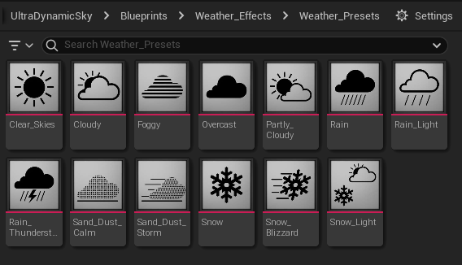
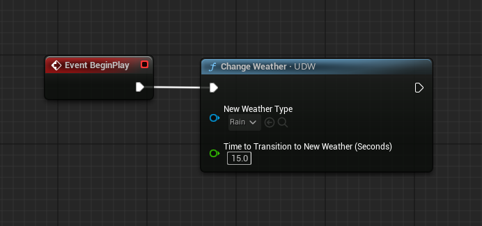
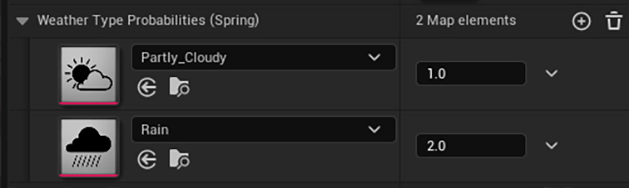
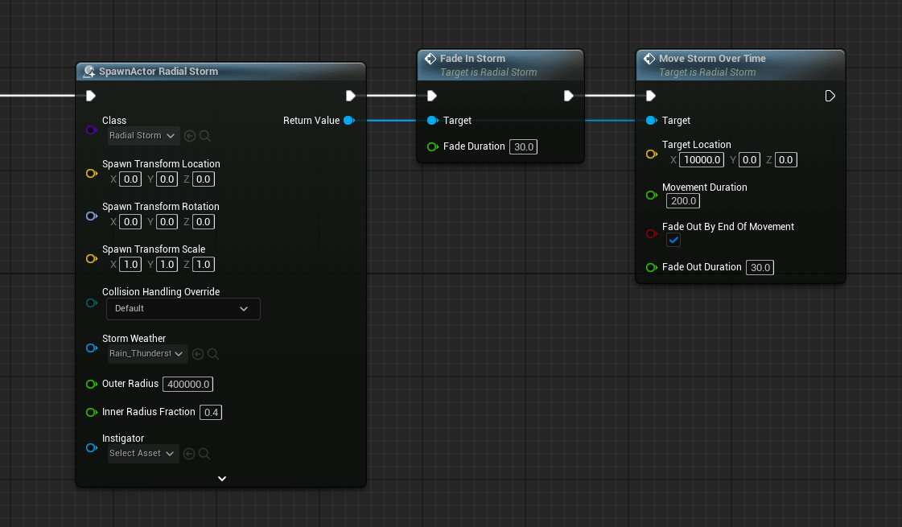

天气系统与天气状态
UDW 的安装与基础控制、天气状态由哪些值构成、预设与切换、随机变化与季节、手动状态、区域天气（覆盖体积与径向风暴）。
把 UDW 加入关卡
天气系统依赖 UDS：关卡里必须先有一个 Ultra Dynamic Sky，否则 UDW 不工作。
确认之后，从 Blueprints 文件夹把 Ultra Dynamic Weather 拖进场景，
它会自己找到 UDS 并把两边接起来。
默认情况下，UDW 会以一个“手动天气状态”启动，其数值与 UDS 上现有的
Cloud Coverage、Fog 保持一致。想快速换成别的天气，在
Basic Controls 的 Weather 里选一个预设即可。
基础控制
选中 UDW，Basic Controls 分类里有两件事：
-
Weather：选择天气设置预设。内置了 Rain、Partly Cloudy、Blizzard 等多种。 这个选择同时决定编辑器中显示的状态和关卡启动时的初始天气。 - 风向（Wind Direction）：影响天气粒子，也会接管 UDS 的云的移动方向。
天气状态是什么
“天气状态”就是决定当前天气的一组数值：
另外还有一组材质状态，专门控制材质效果：
它们属于天气状态的一部分，但运行时“看到的”材质状态并不总是直接来自这些值， 具体机制见 材质效果。
谁在决定天气状态
当前天气可能来自以下几个来源，优先级与叠加关系由各自的设置决定：
| 来源 | 作用 |
|---|---|
Weather 预设 | 在 Basic Controls 里选中的预设，作为静态的全局天气。 |
Change Weather 函数 | 在指定时长内从当前状态过渡到新预设。 |
| 随机天气变化 | 按周期随机切换预设，概率受当前季节影响。 |
| 手动天气状态 | 没有选中预设时使用；也可以单项覆盖，无论当前天气来自哪里。 |
| 天气覆盖体积（WOV） | 一个 Actor，按任意形状的区域施加不同天气。 |
| 径向风暴（Radial Storm） | 圆形区域内的天气，并且能从外部看到风暴本身。 |
天气预设
预设是数据资产，位于 Blueprints/Weather_Effects/Weather_Presets。
除了 Weather 变量，Change Weather、随机天气、覆盖体积、径向风暴也都用这些资产。

做自己的预设最省事的办法是复制其中一个现成资产，再改里面的数值。新建的预设和内置预设用法完全一致。 如果某个预设需要附加逻辑（例如额外的特效），见 自定义天气行为。
切换天气
运行时切换天气用 Change Weather 函数：立即开始向目标预设过渡，过渡时长由参数指定。
过渡完成后，这个全局天气会一直保持，直到你再次调用切换。

随机天气变化
Random Weather Variation 分类让天气按周期随机切换，概率由季节与概率映射表决定。
先选择一个时间模式：
| 模式 | 切换时机 |
|---|---|
Random Interval | 由 Random Weather Change Interval 给出最短/最长保持时间，到时间后换一个。 |
Hourly | 按 UDS 上流逝的时间，每小时切换。 |
Daily | 每天一次，具体时刻由 Random Weather Change Hour 指定。 |
Transition Length 是切换间隔中用于过渡的比例——不是绝对秒数。
例如间隔一小时、比例 0.1，就是用 6 分钟完成过渡。
Weather Type Probabilities 映射表里，每个预设对应一个概率值，按比例生效：
如果某个类型设 5、其余为 1，它被选中的概率就是其他类型的 5 倍。用哪张表取决于当前季节（见下一节）。

Begin Play Weather is Random 决定关卡开始时的天气：勾选则一开始就随机；
不勾选则先显示编辑器里设定的天气，等第一个间隔过去后才开始随机。
这里还可以套用气候预设（climate preset）：它用真实世界的气候数据生成对应的概率表， 并同时设置温度分类里的温度区间。
随机天气与固定预设可以互相切换：调用 Change Weather 切到固定预设；
想切回随机，调用 Change to Random Weather Variation。
季节
Season 是 0–4 的浮点数，从春季开始依次推进。整数一般代表该季节的中段
（0 = 仲春、1 = 仲夏……），此时该季节的数值（随机天气概率、温度）会被纯粹地应用；
中间值表示两个季节的过渡，例如 0.5 表示一半春一半夏。
Season Mode 决定季节的来源：可以由 UDS 上的日期推导（日期在
Simulation 分类里设置，每天自动前进），也可以留空由你自己的蓝图通过
Set Season 函数控制。
由日期推导时，Season Day Offset 可以调整“哪一天对应哪个季节值”；
Meteorological Seasons 决定偏移 0 对应的是气象季节还是天文季节。
材质里想按季节做效果，有两个节点：Sample UDW Season 输出每个季节的 0–1 权重；
Season Color Blend 接收四个颜色输入，按当前季节混合。
手动天气状态
天气系统大部分设计都围绕预设资产，但你也可以不依赖预设，直接控制每一项数值：
- 在
Basic Controls里把Weather清空（不选任何预设）。 - 此时下方的
Manual Weather State分类生效，里面的各项数值就是当前天气。
也可以用 Change Weather 但不给预设参数，这样会过渡到手动状态。
手动状态还能当单项覆盖用：例如当前天气来自 Thunderstorm 预设，但你想单独控制雨量，
就勾选 Manual Rain Override 并设置 Manual Rain，
其余数值仍由预设提供。
天气覆盖体积（Weather Override Volume）
大地图需要“分区域天气”时，用 Weather Override Volume（位于
Blueprints/Weather Effects）。
区域形状由样条（Spline）决定：编辑样条上的点即可，右键某点可以新增点。也可以缩放 Actor， 但尽量避免非等比缩放。
配置方式与 UDW 的全局天气类似：在 Basic Controls 里选预设，也可以启用随机天气变化，
并使用自己独立的概率表（随机的时间/逻辑参数仍取自 UDW 的对应分类）。
| 设置 | 说明 |
|---|---|
Transition Width |
从外部天气过渡到内部天气所占的空间宽度。过渡是纯空间的，理想情况下应设得比较大，让玩家走进去时平滑变化。默认值偏小，只是为了 Actor 初始尺寸好操作。 |
Priority | 多个体积重叠时谁生效。 |
Temperature 分类 | 玩家在该区域内时 UDW 使用的温度区间。 |
| 气候预设 | 与在 UDS 上套用一致：改变概率表与该体积的温度区间。 |
“玩家是否在体积内”的查询位置由 UDW 的 Basic Controls 里
Control Point Location Source 决定。
默认情况下，覆盖体积会把自己的材质状态画进一张渲染目标，供天气材质函数采样。
这样从外面看是一片雪原，走进区域内又能看到区域外没有积雪。该行为可以在 UDW 的
Weather Override Volumes 分类里关闭或调整。
运行时也可以用函数控制它，用法与 UDW 类似：Change Weather 切到指定预设，
Change to Random Weather Variation 切到随机天气。
如果想让覆盖体积做“天气以外”的事，创建一个子类并覆盖 Custom Volume Behavior。
UDW 使用该体积时每帧调用这个函数，输入 Alpha 表示玩家在体积内的程度（0–1）。
径向风暴（Radial Storms）
径向风暴是圆形区域内的天气，与覆盖体积的区别在于形状固定为圆形，并且能把自己渲染出来： 站在风暴外面，可以看到远处一团云、下方的雾与被遮住的闪电。
它也是为“动态存在”设计的：可以在运行时生成、淡入淡出，并沿直线移动穿过关卡。
从外部看到风暴的效果只在 Sky Mode 为体积云时成立。其它 Sky Mode 下径向风暴仍可用， 但只是按玩家位置影响天气状态，看不到风暴本体。
虽然名字叫“风暴”，它也可以用来施加任何天气，包括晴朗天气。
生成与移动
UDW 的 Radial Storm Spawning 分类可以开启周期性自动生成：UDW 会一次生成一个，
让它经过玩家所在位置，用哪个预设可以由当前季节决定（类似随机天气）。
也可以自己生成或直接摆进关卡，不依赖自动逻辑。运行时控制的函数：
| 函数 | 作用 |
|---|---|
Fade In Storm | 在给定时长内把 alpha 从 0 升到 1。 |
Fade Out Storm | 在给定时长内淡出，结束后销毁 Actor。 |
Move Storm Over Time | 在给定时长内移动到目标位置；可选择在移动结束时淡出并销毁。 |

云层之上的天气
Sky Mode 为体积云时，玩家飞到云层之上后，UDW 默认会自动调整天气状态。
在 Weather Above Volumetric Clouds 分类里可以整体关闭这个行为，
也可以逐项调整云上时各天气值的倍率。